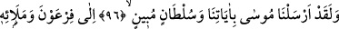
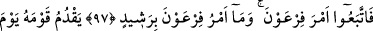
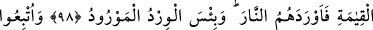
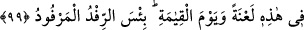

MUSA (A.S.) VE FİR‘AVN
96-97. Andolsun Mûsâ’yı âyetlerimizle ve apaçık bir delil ile Fir’avn’a ve
adamlarına gönderdik. Fakat onlar Fir’avn’un emrine uydular. Oysa Fir’avn’un
emri doğru değildi.
98. O, kıyamet günü kavminin önüne düşecek ve onları ateşe götürecektir.
Varacakları yer ne kötü yerdir!
99. Onlar burada da, kıyamet gününde de lânete uğratıldılar. (Onlara) verilen bu
armağan ne kötü armağandır!
“Andolsun” Allah’a yemin olsun ki “Mûsâ’yı âyetlerimizle” asâ, bembeyaz el, tûfân,
çekirge, haşerât, kan, mal ve nüfus azalmasından ibâret olan dokuz mucize ile “ve
apaçık” vâzıh “bir delil” burhan “ile Fir’avn’a ve adamlarına” yani kavminin eşrâfı
ile ileri gelenlerine “gönderdik.” Yâni, andolsun ki Mûsâ’yı hem bizim âyetlerimiz
olan, hem de kendisinin peygamberliğinin doğruluğuna apaçık veya açıklayıcı olarak
delâlet eden mucizelerle gönderdik. Bu ifâde tıpkı şu âyette olduğu gibidir: “Musa’ya
kitabı ve furkânı verdik.” (el-Bakara, 2/53) yâni hem kitap olma, hem de hak ile bâtılı
ayıran bir huccet olma özelliğini kendinde toplayan Tevrât’ı verdik.
“Sultan” kelimesi ile “ve size otorite bahşedelim.” (el-Kasas, 28/35) âyetinde
olduğu gibi galip gelme ve istilâ mânâsı da kastediliyor olabilir.
Mûsâ (a.s.) kavminin tamamına peygamber olarak gönderilmiş olmakla birlikte, görüş
bildirmede ve işleri planlamada asıl söz sahipleri bu ileri gelenler olup diğerleri her
türlü hareketlerinde bunların peşinden gittiği için özellikle bunlar zikredilmiştir.
“Fakat onlar Fir’avn’un emrine uydular.” Yani onun, Mûsâ’nın getirdiği delilleri
inkâr etmelerine dâir verdiği emre uydular. Fir’avn: “Sizin için kendimden başka bir
ilâh tanımıyorum.” (el-Kasas, 28/38) dediğinde ona boyun eğdiler. Mûsâ (a.s.)’ın
tevhidi ve hakkı kabûl etmelerine dâir emrine karşı geldiler.
Âyette Fir’avn’un Allah’ın âyetlerini inkâr ettiği açıkça zikredilmiyor. Çünkü bu zâten
son derece açıktır. Bu bakımdan onun inkârı ve ileri gelenlere de bunu emretmesi,
varlığı kesin ve açıkça zikredilmesine gerek olmayan bir husustur. Açıkça
zikredilmesine gerek olan sadece gerçeğe götürmeye çalışan ile sapıklığa davet